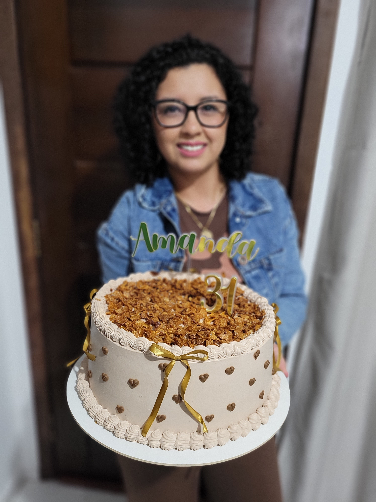
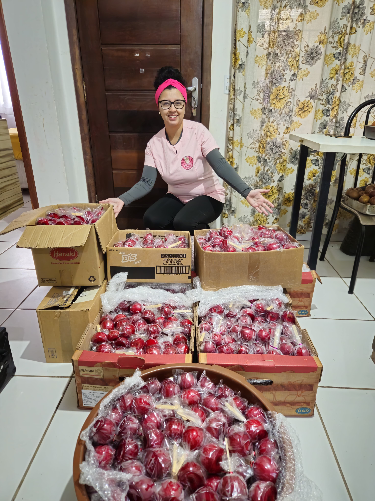
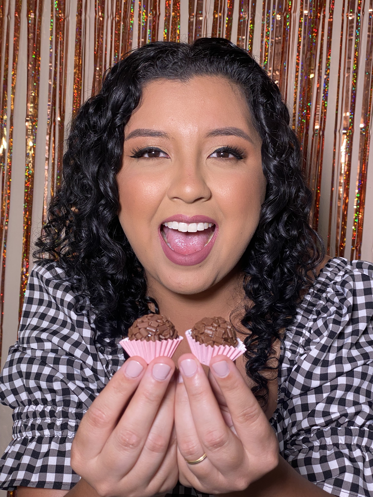

Nossa Doce História




A Ceci Doces nasceu de um sonho simples, mas cheio de amor: estar presente. Há 8 anos, escolhi a confeitaria como caminho para poder acompanhar de perto o crescimento da minha filha Cecília — que não só transformou minha vida, mas também deu nome a esse sonho. Entre suspiros, receitas e muito carinho, a Ceci Doces foi ganhando forma dentro de casa, com aquele toque especial de quem faz tudo pensando em cada detalhe. Ao meu lado, sempre esteve meu esposo, que nunca soltou minha mão. Ele é parte fundamental dessa história — me apoia, me incentiva e está presente em cada etapa, seja na produção ou nas entregas. Hoje, com duas grandes inspirações na minha vida, Cecília e Diana, sigo colocando amor em tudo o que faço. É por eles que trabalho todos os dias. Sou profundamente grata a Deus, por me sustentar e guiar em cada passo, à minha mãe, que sempre esteve presente, ao meu pai, que mesmo não estando mais aqui, segue sendo parte de tudo o que sou, e ao meu irmão, que também faz parte dessa caminhada. Atualmente, trabalho com suspiros artesanais, bolos, brigadeiros, maçãs do amor e cupcakes — com um carinho especial por aquilo que me tornei especialista: os suspiros e as maçãs do amor, feitos com cuidado, delicadeza e muito sabor. Mais do que doces, entrego experiências cheias de afeto. 💕